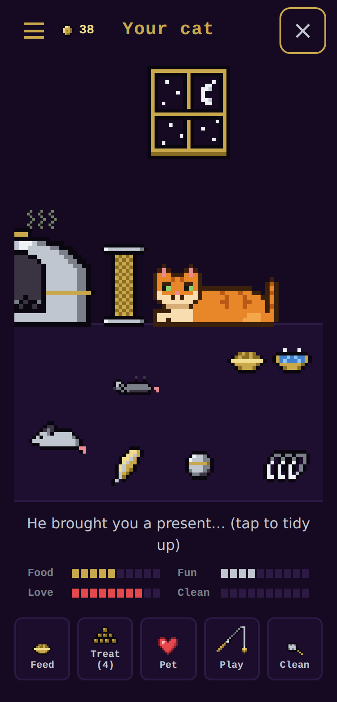
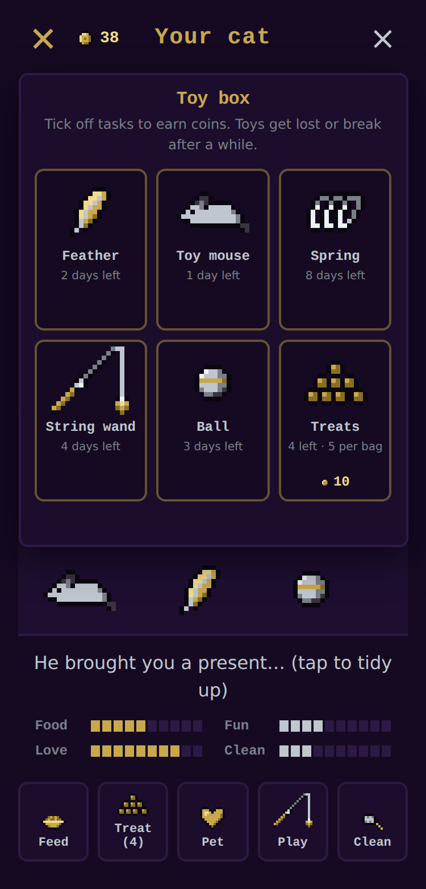
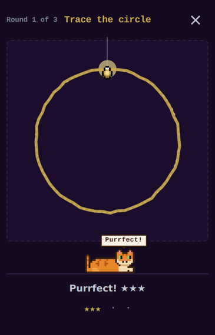

Everything DYDTT can do.
A complete guide to DYDTT — how its views, repeating tasks, reminders, syncing and sharing work, and a few things we've tucked away for the curious. Search for a keyword, or filter by topic to jump straight to what you need.
Getting started
What is DYDTT?
Do Your Daily Tasks Today. DYDTT is a daily task tracker and reminder designed around calm. The interface is deliberately minimal — one burger menu, swipe to change day, scroll to see tasks — so that the only thing demanding your attention is the day itself.
It's built for recurring habits and routines as much as one-off to-dos, with repeating tasks, timed reminders, offline use, sync across devices and optional sharing with friends and family.
Where can I use it?
On Android as a native app, and in any modern browser as an installable web app (PWA) that can be added to your home screen or desktop and used offline. The Android app additionally offers system notifications for reminders and the secret cat game; everything else is shared between the two.
Grab either from the Downloads page.
How do I add my first task?
Tap the burger menu (top right) → Edit → + New Task. Give it a title, then add as much or as little as you like: notes, a date, a reminder time, and a repeat pattern. Tap Save and it appears on the right day straight away.
Tip: a task that's already selected opens in the form ready to edit, so changing your mind takes just a tap.
Your account
Why should I create an account?
DYDTT works without one, but we strongly recommend signing in. It takes a few seconds, and it's the difference between a list that lives on one device and a routine you can rely on anywhere:
- Automatic backup. Every change is saved to your account about a second after you make it. Lose, reset or replace your phone and your tasks come straight back — no exports, no manual saving.
- Every device in step. Phone, browser, tablet — one list, always current. Tick something off in one place and it's ticked everywhere.
- Friends & Family. Profiles, personal codes and shared calendars are available to signed-in users, so the people you trust can help keep you on track.
- Your cat's coins and progress follow you between Android devices, so a new phone never means starting over.
Get the app, open the burger menu → Account, and sign in.
How do I sign in?
Open the burger menu and choose the Account tab, then continue with Google or sign up with your email and a name. It's a one-time step — after that, DYDTT quietly handles the rest. Already have tasks on this device? You'll be asked whether to upload them to your account — choose Upload and they're safe.
What if I stay signed out?
Everything still works, but your tasks exist only on that one device: nothing is backed up, clearing the browser's data or losing the phone loses them, and Friends & Family isn't available. You can sign in at any time and upload what's already there.
Days & views
What are the three views?
- 1 Day — just the selected day's tasks.
- 48 Hour — today and tomorrow together.
- 9 Day — a 3×3 grid of surrounding days (with little dots showing progress) above the selected day's tasks.
Change it in the burger menu → Display tab → View. Each device remembers its own choice, so your phone can stay minimal while your browser shows the whole week.
How do I move between days?
Swipe left or right anywhere on the screen — the top bar, the date, a task list (even while it's scrolling), the 3×3 grid or either 48-hour column — to move a day at a time. Swipes are paused while the menu, a dialog or the cat's room is open, and when you're typing in a text box. On a keyboard, use the ← and → arrow keys — every gesture in DYDTT has a keyboard equivalent. Scroll vertically to move through the tasks within a day.
What do the dots under each day mean?
Each dot is a task: gold when it's done, grey when it isn't. At a glance you can see how a past day went, how full the coming days look, and where today stands — without opening a single list.
Can I use DYDTT sideways on my phone or tablet?
Yes — on Android, with Landscape Mode. By default the app stays upright, even if your phone has auto-rotate switched on, so it never flips unexpectedly. Turn on Landscape Mode in the burger menu → Display tab and the app will follow your phone's rotation.
Held sideways, the layouts widen to use the space: a date sidebar, two days side by side in 48 Hour, the 3×3 grid beside your tasks in 9 Day, and a roomier room for the cat. Turn the phone upright and you're straight back to the familiar phone layout. Swiping to change day still works as usual.
What is Desktop Mode on the web app?
On a computer, the web app can switch to the same wide layouts. It's on automatically for large screens used with a mouse, and you can toggle it in the Display tab. In Desktop Mode, small ‹ › arrows at the screen edges change the day and mouse-dragging no longer swipes, since a drag shouldn't change your day by accident. Narrow browser windows keep the phone layout.
Tasks & repeating
How do repeating tasks work?
Choose a repeat pattern in the task form. DYDTT offers five, covering most routines:
- Daily
- Several times a day (you set the times)
- Weekly on chosen days
- Every N days
- Monthly (short months use the last day)
A repeat can run forever, end on a date, or stop after N times. Every day's copy is its own task with its own done state, so ticking today's walk never ticks tomorrow's — and a missed day stays honestly missed rather than silently rolling over.
What happens when I edit or delete one copy of a repeating task?
You'll be asked whether to change just this one or this and all future. Deleting also offers all (past and future). Changing the repeat pattern itself only offers “this and all future”.
How do reminders work?
Set a reminder time on a task using the gold time picker (5-minute steps; existing tasks keep their exact minutes). While DYDTT is open you'll see an in-app reminder card at the right moment. On Android you can also switch on system notifications in the Display tab so reminders reach you even when the app is closed.
Reminders cover yesterday, today and tomorrow, so repeating tasks are always ready when their time comes.
Can I clear a whole day?
Yes. With nothing selected, open the menu → Edit → Clear… to clear the current day, or choose to wipe the entire calendar. Because a wipe is permanent, it asks for a second, red confirmation first — and if you're signed in, it removes everything from your account and all your devices too.
Sync & offline
Does it work offline?
Completely. Tasks live in a local database on your device, so you can add, edit and tick things on a plane, in a tunnel or in a signal-free corner of the office. Anything you change offline is queued and uploads automatically once you're back online, retrying every 30 seconds if something goes wrong.
How does sync work?
- Signed out: local only — nothing is uploaded, so nothing is backed up. (We recommend signing in.)
- Signed in: changes upload about a second after each edit. The latest edit wins.
- First sign-in with existing tasks: you choose to upload them, discard them, or not sync yet. If some match tasks already in your account, you choose which version to keep.
The Sync button in the Edit tab shows the current status (synced a moment ago, changes waiting, offline, or a problem) and lets you sync on demand whenever you like.
What happens when I sign out?
Pending changes upload first (you'll be asked if some can't be). Then the device is cleared. If a different account signs in later, the previous account's local data is cleared first.
Which settings sync?
Your tasks and repeats sync everywhere. Display preferences — your chosen view, reduced motion and reminder settings — deliberately stay per-device, so your phone and your browser can each behave exactly the way you like.
Friends & Family
How do I connect with someone?
Each person has an 8-character code (Account tab → copy it, or make a New code if it leaks). Enter someone's code under Add by code and choose Friend or Family. They receive a request and have to approve it — nothing is shared until they do — and once accepted the connection works both ways.
Codes avoid look-alike characters (no 0/O or 1/l/I) so they're easy to read aloud and type. A New code stops the old one working without disturbing existing connections.
What's the difference between Friend and Family?
| Friend | Family | |
|---|---|---|
| Days visible | Yesterday, today, tomorrow | All days |
| See what's ticked | Yes | Yes |
| Tick / untick for you | No (read-only) | Yes |
| Edit, add, delete | No | No |
The person sharing chooses the level for each viewer, and can change it later from the circle menu.
How can I tell whose calendar I'm looking at?
When you view someone else's tasks the whole app switches from gold to a calm light blue, and the burger is replaced by their picture, “Name's tasks” and an X to exit. All three views work, so you can glance at a day or survey their week. Close it and you're instantly back in your own gold-trimmed calendar.
Can I keep a task private?
Yes — tick Not shared with friends or family in the task form. Private tasks never appear in anyone else's view and carry a small 🔒 for you. For repeating tasks, privacy applies to the whole series, so there are no stray future copies to worry about.
Can I remove someone?
Open their circle menu → Remove … From List. It disconnects both ways after a confirmation.
What's in my profile?
Your profile is created when you sign in: a name and a round picture. Pick a photo up to 10 MB (JPEG, PNG, WebP or GIF); it's centre-cropped to a small square. Google sign-in uses your Google name and photo to start with.
Look & accessibility
Why is it grey, gold and purple?
A muted-luxury palette: near-black greys for calm, gold for what matters, purple as a quiet secondary accent.
Is DYDTT accessible?
It aims for WCAG 2.2 AA: large touch targets, keyboard equivalents for every swipe, focus trapping inside the menu, announcements for screen readers, and high-contrast text. A reduced motion toggle in the Display tab (and your system preference) turns off animation.
The secret cat
There's a cat on the top bar — what's his deal?
A pixel-art orange tabby dozes on the top bar line, far left, eyes closed. His tail swishes now and then (and stays still if you've turned on reduced motion). He hides when you're viewing a friend's or family member's calendar.
Is there a secret? How do I find it?
Tap the cat quickly, again and again — each tap within about 2 seconds of the last or the count resets. You'll see hearts, then fish… and on the 14th tap he opens his eyes and says “Purr”.
On the Android app that opens a secret page: a tiny virtual cat of your own. On the website he just purrs and goes back to sleep — the game is Android-only.
Like Android's developer options, it only needs to be found once. After that, a little gold food bowl next to the top-bar cat opens it directly.
How does the cat game work?


You get a new cat with 30 coins. His room has a litter box, a scratcher, food and water bowls, and a window that shows day (7am–8pm) or night.
- Needs — Food, Fun, Love and Clean. They decay slowly: hunger empties in about 30 hours, fun in 36, love in 48.
- Actions — Feed, Treat, Pet, Play and Clean. Tapping the cat pets him (hearts, and a “Purr” now and then).
- He never dies. Neglect him and he gets grumpy and may leave you “presents” to tidy up.
- Coins — you earn 1 gold coin for every task you tick off (once per task), on any device once he's been found. Spend them in the toy box (☰).
- Daily hello — he sends one friendly notification a day, only once found.
| Toy | Price | Lasts |
|---|---|---|
| Treats (bag of 5) | 5 | until eaten |
| Toy mouse | 7 | 15 days |
| Ball | 14 | 5 days |
| Feather | 25 | 8 days |
| Spring | 14 | 23 days |
| String wand | 30 | 32 days |
Signed in, he syncs across your Android devices — and if you reinstall or switch phones, signing in brings back the cat already in your account rather than starting a new one (a cat found on a new device never replaces the saved one, and any coins you earn meanwhile are kept). Signed out, he lives on that device only — another reason to create an account.
What's the string-wand minigame?

Choose Play to dangle the wand. There are 3 rounds, each a different shape (circle, zigzag, wave, infinity, heart or star). Drag the lure along the dotted line in one swipe while the cat chases it.
Each round scores 0–3 stars: 70% how much of the shape you covered, 30% how closely you stayed on the line. Fun gained scales with your average — a perfect run is about +80. Leaving early gives no reward.
No matches. Try a different word.